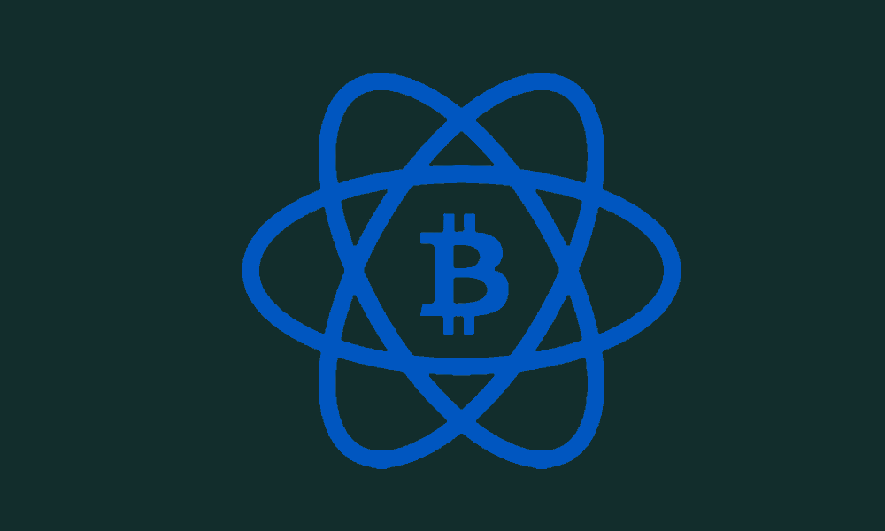
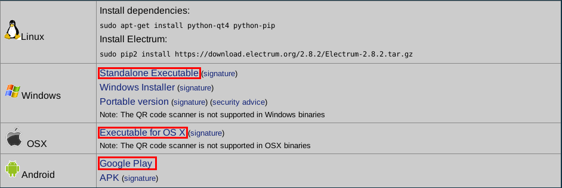
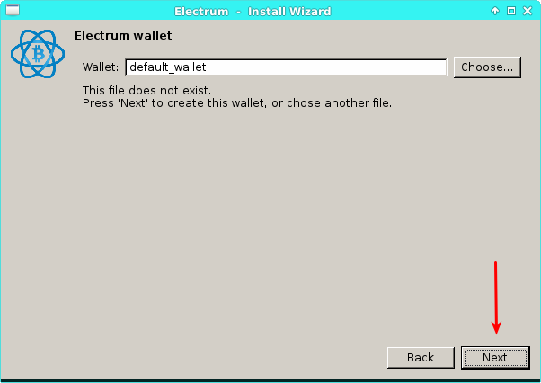
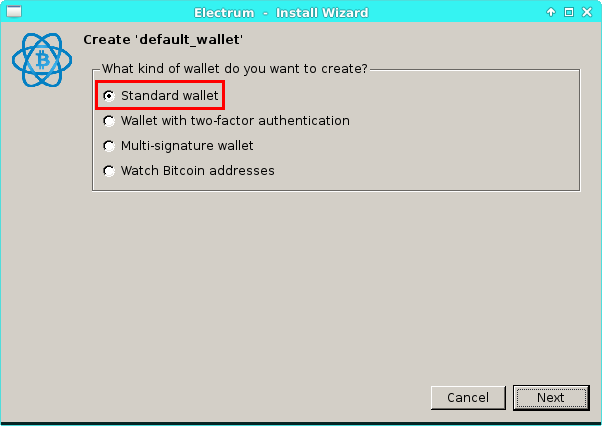
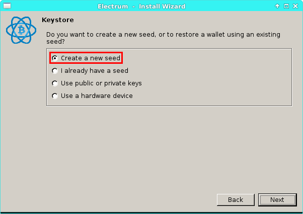
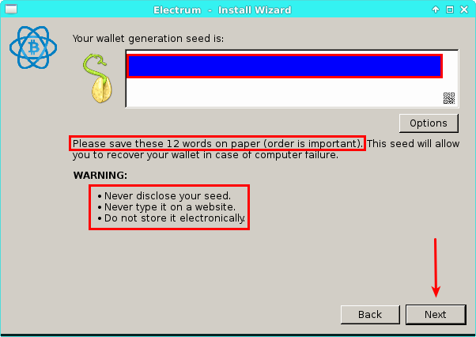
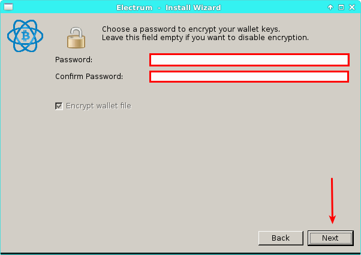
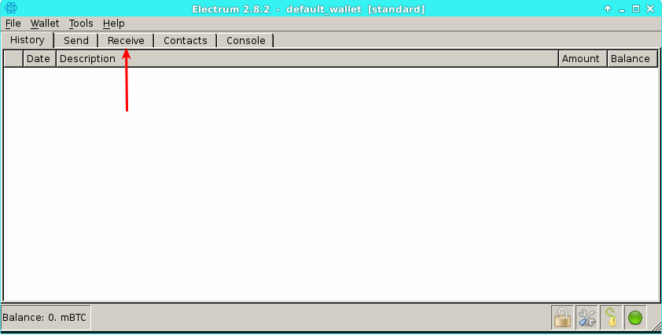
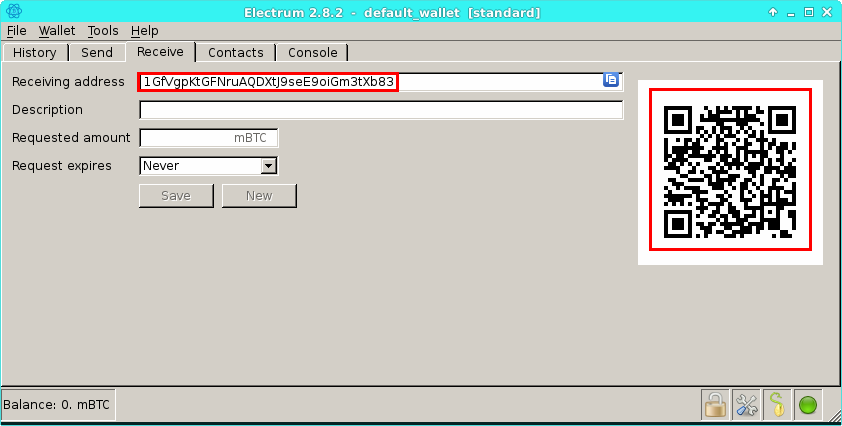
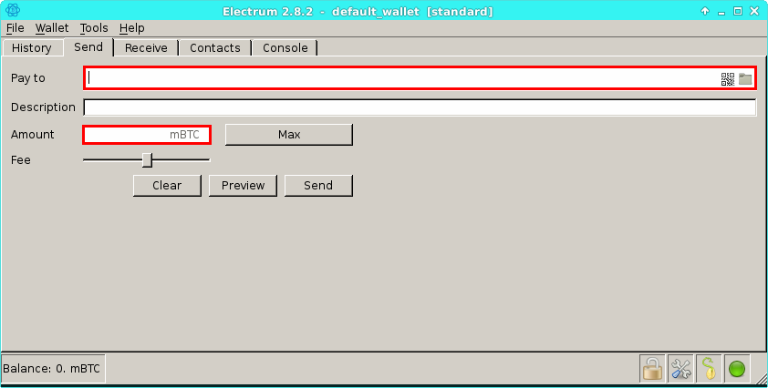

Welcome
Joe Grassl
Freelance codeslinger
>>Getting Started with Bitcoin
Maybe you've heard of Bitcoin, the world's most popular digital currency. It's got some quirks, but there are a lot of things that make it pretty handy in the right situations. Want to learn how it works and become a bit of a Bitcoin baron yourself? Let's dive in!

>>Bitcoin Behind the Scenes
While Bitcoin is pretty new, it already has some interesting history behind it. Bitcoin (abbreviated BTC) was released to the world on Halloween of 2008 by an unknown person or group going by the name of Satoshi Nakamoto. While they started out with almost no value at all, Bitcoins have surged in price. One Bitcoin is currently worth $1,499 as of today. In 2010, it famously took someone 10,000 Bitcoins to buy a single pizza. Wow.
But how does it work? Well, Bitcoin transactions are verified by people around the world who solve equations to make sure everything checks out. This is called Bitcoin mining and they get paid for this with more Bitcoins, although mining has become very difficult these days. To use this magic internet money, you first need a Bitcoin wallet, which is a little piece of software that keeps your coins safe. Wallets can be stored online, on special USB devices, or just on your computer. While there are many wallets out there, I would recommend Electrum.

To download Electrum, just go to https://electrum.org/#download and click on the right choice for your operating system. It even works on Android phones! If you have Linux, just run the commands shown.

After you have it downloaded, you just need to run it and create your first wallet.

You should see a screen like this. Click next to get started.

For normal, everyday use, you'll just need a standard wallet. Make sure it's selected and click next.

Make sure you have "Create a new seed" selected and continue.

Your wallet seed is very important. It will give your wallet a second life if yo
u ever lose it. However, if someone else gets a hold of it, they can clone your
wallet which, as you can imagine, wouldn't be very good. Just follow the highlig
hted instructions above and you'll be fine.

Now comes the password. In order to make your wallet secure from thieves, you'll
need something strong. Anything over ten characters with a healthy mix of numbers,
symbols, and upper and lowercase letters will do.

For now, your wallet is empty. If you want to fix that, click the "Receive" butt
on.

The inside the highlighted boxes is your Bitcoin address. The one on the right is in the form of a QR code, which people can scan to give you money. Bitcoins usually take a few minutes to get to your wallet after being sent. If you need to pay someone, click the "Send" button at the top.

Paying people is easy! Just enter their address and the amount you want to give them and hit send! The "fee" slider is used to adjust the transaction fee you pay when sending Bitcoins. These fees go to the Bitcoin miners to make sure they're fairly compensated for making things run smoothly. It's usually pretty small, but you mess around with it if you want.
What Can You Do with Bitcoin?
Well, firstly, you can invest. Bitcoins have been skyrocketing recently and the price could go even higher in the future. Please note, however, that Bitcoins are notoriously unstable and the price could also drop at any moment. This means that Bitcoin is often best used for paying and getting paid then simply storing money, although Bitcoin certainly offers you more control over your money than a bank could give you. If you'd like to store your money as digital currency long-term, you might want to look into
NuBits, which are always worth a dollar each. There are many exchanges online that let you convert your Bitcoins into any other digital currency you want and there's a lot out there, each with their own benefits. If you'd simply like to shop, check out
OpenBazaar. If you want to buy things in the real world using Bitcoin, you can get a Bitcoin debit card. Bitcoin is often thought to be an "anonymous" currency. In reality, all transactions are publicly recorded online at www.blockchain.info. There are ways to hide digital payments, such as using another digital currency called Monero [http://www.monero.org], but plain Bitcoin is usually not enough for this. Bitcoin allows you to do things that would be very difficult with regular money and gives you almost complete control over what happens to it. Thanks for reading and good luck in cyberspace!